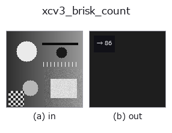

features op• Datenarten: image → feature
• Aufruf: fullseye.apply(img, "xcv3_brisk_count", a=0.5, b=0.5) (das 2-D-Modell ist ein Bild plus zwei skalare Regler a,b∈[0,1])

*Die Abbildung ist die tatsächliche Ausgabe auf einer synthetischen 128×128-Eingabe. Links Eingabe, rechts Ausgabe. Punktwolken als Draufsicht-Streudiagramm (Helligkeit = z), 1-D-Reihen als Linie, Volumen als Maximum-Projektion entlang z, Videos als mittleres Bild, komplexe Bilder als Betrag; Rückgabewerte, die kein Bild ergeben, werden als Werte gezeigt.*
Regler a durchfahren (0,1 / 0,5 / 0,9, der andere Regler auf Standard):
▸ xcv3_brisk_count: knob a sweep (docs site)
*Regler b ändert die Ausgabe nicht (gemessen: identisch bei 0,1 / 0,5 / 0,9).*
BRISK-Merkmalspunktanzahl (OpenCV-BRISK-Detektor). Gibt als Feature die Anzahl der Keypoints zurück, die von diesem schnellen, auf binären Deskriptoren basierenden Merkmalspunktdetektor erkannt wurden.
> Die ausführliche Beschreibung unten ist der Originaltext — Zusammenfassung und Überschriften sind übersetzt.
`a は検出閾値 thresh(int(10+60*a) で 10〜70。高いほど検出数が減る)を振る。b は未使用。実装注記: cv2 5.0.0 で BRISK_create が cv2.xfeatures2d に移動したため、両方の場所を getattr` で試す互換コードになっている。
• Leitfaden zur Familie gallery2d_features
• Katalog der Beispieldaten (Download-URLs / Lizenzen) — 2-D nutzt skimage.data (BSD/Public Domain) plus synthetische Bilder, 3-D nennt Download-URLs echter Datenquellen (Stanford, PDS, …).
• Herkunft und Literatur der Operatoren — die Quellen der Forschung/Verfahren, auf denen diese Operatorfamilie beruht.
• Der kanonische Algorithmus (Autor, Jahr) und seine Anwendungen stehen im Familienleitfaden oben.
Das Programm unten ist nachweislich lauffähig (gleiche Eingabe wie die Abbildung). In der Studio-Hilfe wird dieser Block zu Schaltflächen, die es sofort laden und ausführen.
xcv3_brisk_count 0.50 0.50
▸ Load this pipeline · Load & run
• gallery2d_features — py -3.11 examples/gallery2d_features.py
feature als Eingabe)features)blob_count · area_frac · count_contours · total_length · vol_count · sk_euler · sk_entropy_feat · sk_blur_effect
*Provenance: ops.py — 2D Operator-Registry. Diese Notiz wird von tools/opdocs.py md erzeugt (nicht von Hand bearbeiten).*
© 2026 Kazufumi Furuse — Fullseye operator documentation. Licensed under Apache-2.0.
{kind=link}